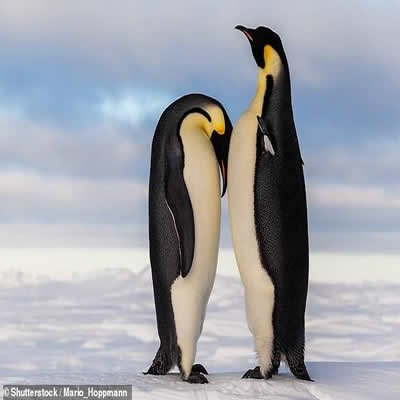

Canario
El canario es el pájaro cantarín por excelencia y uno de los más solicitados como mascota. Originario de las Islas Canarias (de ahí su nombre), este pajarillo característico por su plumaje amarillo desciende del llamado ‘canario silvestre’, similar al que ahora conocemos pero más rojizo y algo más pequeño.Dentro del mundo del canario debes saber que hay diferentes variedades, unas más cantarinas, otras más vistosas, otras más grandes… para todos los gustos, vaya. Estas son las más conocidas: timbrado español, rollier, malinois y el cantor americano.

Loro
El loro es una gran mascota, divertida, extrovertida y exótica, de una gran belleza y variedad cromática y con mucha popularidad debido a su capacidad para reproducir palabras y frases. El loro es una gran mascota, divertida, extrovertida y exótica, de una gran belleza y variedad cromática y con mucha popularidad debido a su capacidad para reproducir palabras y frases.

Pingüino
El pingüino es un animal sumamente sensible a las temperaturas, y que necesita una serie de cuidados específicos muy rigurosos. Además, suele no demostrar que está enfermo hasta que es demasiado tarde y si lo estamos desatendiendo no podremos saberlo con seguridad.Además el hábitat del pingüino es muy particular y no coincide mucho con el nuestro (sino los tendríamos caminando por nuestras calles). Sin embargo, siempre hay alguien con ganas de desafiar las reglas, y conseguirse un pingüino capaz de ponerse una mochila y salir caminando hasta la pescadería en donde le dan una buena trucha para comerse en su casa.
